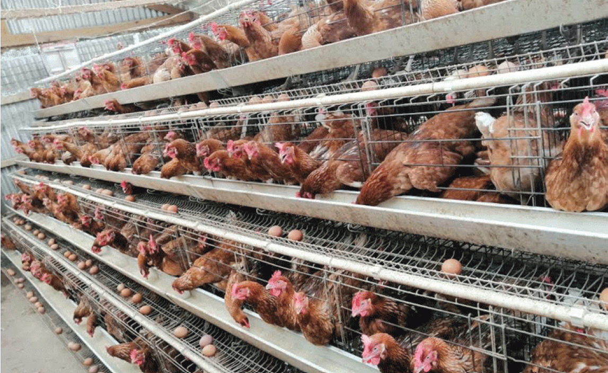

drinkers are attached to cages from outside except nipple drinkers where a pipeline is installed through or above cages. In medium-scale egg production, feeding and egg collection are done manually. In large-scale poultry farms, auto-operated feeding trolleys and egg collection belts can be used. Depending on the type of cages, the droppings are collected in trays fitted below the cages, on belts, on the floor or in deep pits under the cages. Figure 9.6 shows a section of the cage system of a poultry house.

Figure 9.6: Section of cage system of poultry house
Source: https://www.pd.co.ke/wp-content/uploads/2020/09/Hens-crammed-into-wire-cages-800x500.gif
Advantages of cage poultry housing system
(a)
The system requires less labour;
(b)
There is no wastage of feed and space;
(c)
It is difficult for the birds to catch pathogens that will cause them infections;
(d)
Vices such as egg eating and pecking are minimal;
(e)
Sick birds can be easily identified and isolated for treatment;
(f)
Unproductive birds can be easily identified and culled;
(g)
Birds have more protection from internal parasites and soil-borne illnesses;
(h)
There is less cracking of eggs as the birds cannot perk on the eggs and the eggs are cleaner;